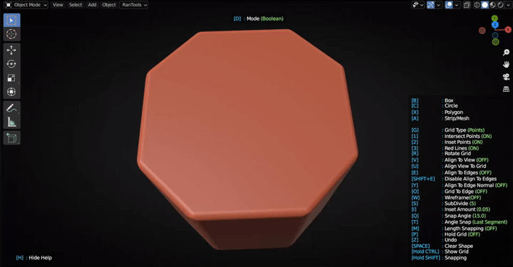

P-Cutter¶
P-Cutter¶
Launch P-Cutter modal by clicking ‘Draw’ from the P-Cutter Pie Menu(Shift+Q)
Drawing Phase¶
Shapes¶
Box(B)¶
Draw rectangle shapes. Hold down ALT to draw from the center.Hold down shift to use snapping and draw square.


Place Grid¶
If you dont want to use the grid as a reference and dont want to snap to the points you can toggle “Hold Grid” using ‘P’ Key so the grid wont disappear if you release CTRL key. You can place the grid on any other face by simply hovering over that face and pressing CTRL key.
Grid Types¶
Two type of grids are available which can be set in the preferences. You can also toggle between the two using G key.
Inset Points:¶
Insets are showen to help you draw precisely along the edges. You can increase the Inset amount by pressing I and decrease by holding ALT while pressing.
Resize and Subdivide¶
The Grid can be resized using the up and down arrow keys. Or by scrolling the mouse wheel up and down while holding down the CTRL key.Grid subdivision levels can be changed using the S key.Press S to increase subdivision level.Hold down Alt while pressing S to decrease subdivision level.
Rotate¶
Grid can be rotated using the ‘R’ key. To rotate in the oposite direction hold down the ALT key while pressing ‘R’. To rotate by smaller increments hold down the SHIFT key.

Align View to Grid¶
Press U to align view to Grid.
Align Grid To View¶
Press V to toggle View Alignment mode. Grid will be aligned with the view and will be placed near the active object.If there is no active object you wont be able to draw(as the grid needs some object to decide its location) in this case you can simply hover over any object and press CTRL to use that object. To reposition the grid to a new location and angle just hold down ctrl(or just click CTRL if Place Grid is ON)
Align To Edge¶
Before using Align to Edge you need to place the grid once by hovering over any face and pressing CTRL.
Rotation:¶
Align the grid rotation to any edge by Holding down Alt and right clicking near the edge.A White line will be placed on the edge to highlight that it is active.
Location:¶
Align grid location to an edge (or multiple edges) by holding down SHIFT and ALT and right clicking near the edge.All edges will be highlighted with green and grid will be placed at the center of all the edges.


Disable¶
Press SHIFT+E to disable edge alignment.
Snapping¶
Angle Snapping¶
Use angle snapping by holding down SHIFT while drawing.
Press Q to increase the snapping angle or hold down ALT while pressing to decrease it.
You can toggle between snapping to the Grid angle and the last segment using T.
Intersect Snapping¶
Use Intersect snapping by holding down ALT while drawing.
Segment’s endpoint will snap to the intersection point of Red Lines or any other segment of the polygon.
When combined with angle snapping it can be used to quickly draw precise shapes.
UNDO¶
Press Z to remove the last vertex from the drawing. Press Spacebar to clear the shape
Cutting Phase¶
Booleans Modes:¶
U : Union¶
Press U to change the boolean mode to Union
D : Difference¶
Press D to change the boolean mode to Difference

I : Intersect¶
Press I to change the boolean mode to Intersect

S : Slice¶
Press S to change the boolean mode to Slice
C : Inset¶
Press C to change the boolean mode to Inset
Shape Adjustments:¶
Thickness¶
Press T to adjust the thickness/depth of the shape.
Vertex Bevel¶
Press V to add a vertex bevel to the shape.
Bevel¶
Press B to add an edge bevel to the shape.
New Bevel¶
Hold down CTRL and press B to add a new bevel after the boolean modifier.
Mirror:¶
Press X,Y or Z to add a mirror along that axis. By default the mirror object is set to the object being operated on. You can change the mirror object to the cutter itself by pressing O. Hold ALT while pressing X, Y or Z to flip that mirror axis.
Mirror(Object vs Self):
Array:¶
Linear Array¶
Press E to add a linear array to the cutter. Press X,Y or Z to change the array axis. Scroll mouse wheel up or down to increase or decrease the array count.Move your mouse left or right to change the array offset.
Linear Array from Middle¶
To add an array from the middle first you have to add a mirror with object set to cutter(self) then add the array by pressing E. Use the same axis for array as you used for the mirror.

Radial Array¶
Press R to add a radial array. Scroll mouse wheel up or down to increase or decrease the array count.Move your mouse left or right to change the radius.
Press Q to change the array center(Draw Location/Grid Center).

Press F to change the array axis
Fast Cutter Mode¶
Hold down CTRL while clicking the Draw button to enter the fast mode of P-Cutter. It will automatically enter the orthographic view. And you can start drawing cutters right away. All cutters you draw will go straight through your mesh and you can instantly draw your next cutter without having to restart P-Cutter.
Cutters Recall¶
Press ALT+X to bring up the list of available cutters. Hover over any name to unhide that cutter.Click on any name to enter back into the P-Cutter modal(or enter edit mode if cutter is destructive(modifiers applied)) and make changes. Press A while hovering over any name to apply that cutter modifier. Or Press X to delete that cutter.
You can also press ALT+V to quickly recall the last cutter.